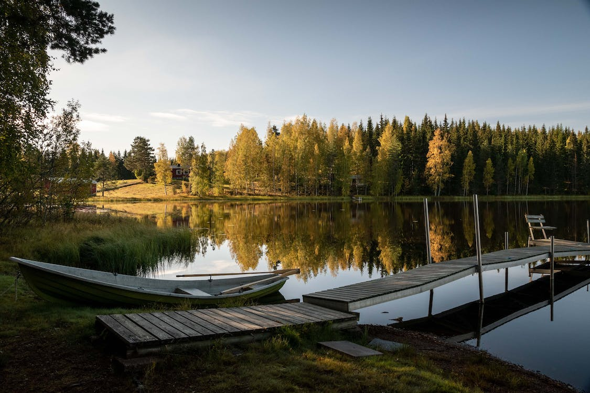

Korpinkierros
Korpinkierros tarjoaa 8 km pituisen reitin läpi kauniiden metsämaisemien ja järvenrantojen. Tämä reitti on suosittu sekä aloittelijoiden että kokeneempien vaeltajien keskuudessa.
Tutustu ReittiinKorpinkierros tarjoaa 8 km pituisen reitin läpi kauniiden metsämaisemien ja järvenrantojen. Tämä reitti on suosittu sekä aloittelijoiden että kokeneempien vaeltajien keskuudessa.
Tutustu ReittiinHaukkalammen reitti on 4 km pitkä ja se kulkee Nuuksion keskeisimpien nähtävyyksien läpi. Sopii erinomaisesti lyhyille päiväretkille.
Lue LisääPitkäjärven kierros on 15 km pitkä vaativa reitti, joka sopii kokeneemmille vaeltajille. Reitti tarjoaa upeita näkymiä ja haastavia maastoja.
Löydä Reitti